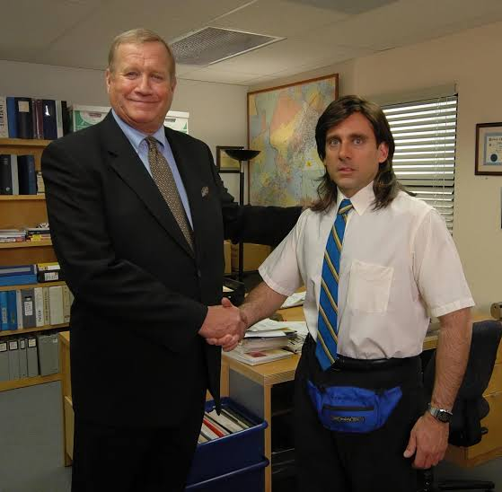

Personajes principales

Michael Scott
Steve Carell
Temporadas 1 a 7
Gerente regional de la sucursal de Scranton de Dunder Mifflin. Michael busca constantemente ser querido y convertirse en un referente para sus empleados, aunque sus decisiones y su necesidad de llamar la atención suelen provocar situaciones incómodas. Detrás de su comportamiento impulsivo existe una persona que valora profundamente a quienes considera su familia dentro de la oficina.

Jim Halpert
John Krasinski
Teporadas 1 a 9
Vendedor de Dunder Mifflin conocido por su sentido del humor y su actitud relajada frente al trabajo. Jim suele observar el absurdo de la oficina desde una perspectiva más irónica y es especialmente conocido por sus bromas hacia Dwight. Su relación con Pam se convierte en uno de los principales ejes narrativos de la serie.

Pam Beesly
Jenna Fischer
Temporadas 1 a 9
Pam comienza trabajando como recepcionista de Dunder Mifflin y, con el paso de las temporadas, atraviesa importantes cambios personales y profesionales. Es creativa, sensible y observadora, y su evolución refleja uno de los recorridos más importantes de la serie. Su relación con Jim ocupa un lugar central en la historia.

Dwight Schrute
Rainn Wilson
Temporadas 1 a 9
Vendedor y posteriormente encargado de la oficina, Dwight se caracteriza por su extrema dedicación al trabajo, su personalidad excéntrica y su obsesión por la autoridad y las reglas. Es uno de los personajes más particulares de la serie y mantiene una relación de constante rivalidad y amistad con Jim.

Angela Martin
Angela Kinsey
Temporadas 1 a 9
Responsable del departamento de contabilidad de la sucursal. Angela es estricta, reservada y extremadamente organizada. Su personalidad contrasta con el caos habitual de la oficina. A lo largo de la serie, sus relaciones personales y profesionales revelan diferentes aspectos de su carácter.

Oscar Martinez
Oscar Nuñez
Temporadas 2 a 9
Contador de Dunder Mifflin, reconocido por su carácter racional y su conocimiento de las finanzas. Oscar suele funcionar como una de las voces más sensatas dentro de la oficina, aunque también termina involucrándose en muchas de las situaciones caóticas que ocurren a su alrededor.

Kevin Malone
Brian Baumgartner
Temporadas 1 a 9
Contador de Dunder Mifflin. Kevin tiene una personalidad tranquila, inocente y algo distraída. Su particular manera de comunicarse y sus ocurrencias se convierten en una fuente recurrente de humor dentro de la oficina.

Stanley Hudson
Leslie David Baker
Temporadas 1 a 9
Vendedor de Dunder Mifflin que mantiene una actitud generalmente distante frente al trabajo. Stanley prefiere mantenerse al margen de los conflictos de la oficina y espera principalmente que llegue el momento de terminar su jornada laboral.

Kelly Kapoor
Mindy Kaling
Temporadas 1 a 9
Representante de atención al cliente de Dunder Mifflin. Kelly es extrovertida, conversadora y apasionada por la cultura popular, las relaciones y los acontecimientos de la oficina. Su personalidad intensa y sus interacciones con Ryan generan numerosas situaciones cómicas.

Ryan Howard
B.J. Novak
Temporadas 1 a 9
Ryan comienza como empleado temporal y posteriormente asciende dentro de Dunder Mifflin. Su recorrido muestra cómo las ambiciones profesionales y la búsqueda de éxito pueden transformar la relación de una persona con el trabajo y con sus compañeros.

Andy Bernard
Ed Helms
Temporadas 3 a 9
Vendedor de Dunder Mifflin proveniente de la sucursal de Stamford. Andy es conocido por su entusiasmo, su personalidad competitiva y su tendencia a expresarse a través de canciones. Con el avance de la serie, adquiere mayor protagonismo dentro de la oficina y atraviesa importantes cambios personales.

Erin Hannon
Ellie Kemper
Temporadas 5 a 9
Erin es la recepcionista de Dunder Mifflin durante gran parte de las últimas temporadas.Aunque suele mostrarse entusiasta y amable con sus compañeros, también puede ser impulsiva y algo excéntrica. A lo largo de la serie desarrolla distintas relaciones personales y profesionales que permiten conocer nuevas facetas de su personalidad y la convierten en una presencia importante durante los últimos años de la sucursal de Scranton.